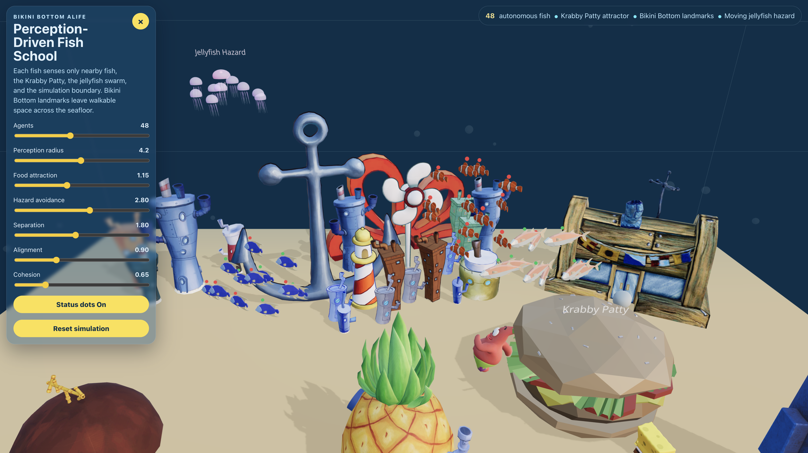

Bikini Bottom Artificial Life
A Multi-Agent Simulation with Perception-Driven Behavior, Internal Hunger State, and Environmental Hazards
Team Members: Leica Shen, Yiran Wu, Zhengli Shang, Zijie Zhang
Abstract
We present a browser-based three-dimensional artificial-life simulation inspired by Bikini Bottom. Fish agents move through a stylized underwater volume using a local perception-action loop that combines Reynolds-style steering forces with artificial-life-oriented extensions: an internal hunger state that gates food-seeking motivation, and school-level target modes that produce stable explore, food-loiter, or food-avoidance behavior at the group scale. A procedurally animated jellyfish swarm acts as a periodic bait/hazard, and static landmark footprints impose collision constraints. The system is implemented in TypeScript with React, Vite, Three.js, and React Three Fiber, runs in a standard web browser, and exposes the main behavior weights through an interactive controls panel so emergent group dynamics can be inspected and tuned in real time.
Project Links
Representative Image

Video Demo
If the embedded preview does not load, open the Google Drive video demo.